This section explains the tests conducted on the various iterations of the Kinetix subsystems and prototypes based on the design specifications. The results were analysed to determine if the requirements for Kinetix were met.
4.1 Mechanical Sub-System
The table (Table 5) below presents the set of mechanical tests designed to evaluate the Kinetix system against its design specifications, including portability, range of motion, and structural performance.
| Test Code | Name of Test | Design Specification Addressed | Purpose of Test |
|---|---|---|---|
| DT1 | Weight Test | D1 | Verify the weight is less than 13 kg. |
| DT2 | Size Test | D2 | Verify the size is less than 100 × 33 × 33 cm. |
| DT3 | ADL Range of Motion Test | D4 D5 D6 D7 |
Verify that the physical device of Kinetix has sufficient range of motion for ADL mode in all planes of movement. |
| DT4 | Aluminium Tube Load Test | NA | Verify the minimum factor of safety of the aluminium tubes. |
| DT5 | Lateral Stability Test | NA | Verify lateral displacements of the structure. |
| DT6 | Durability Test | D8 D9 |
Verify the ability of the structure to withstand reasonable use in a clinical context. |
4.1.1 Weight Test
The test procedure used to verify that the total weight of the Kinetix device complies with the specified design requirement can be seen Appendix O.
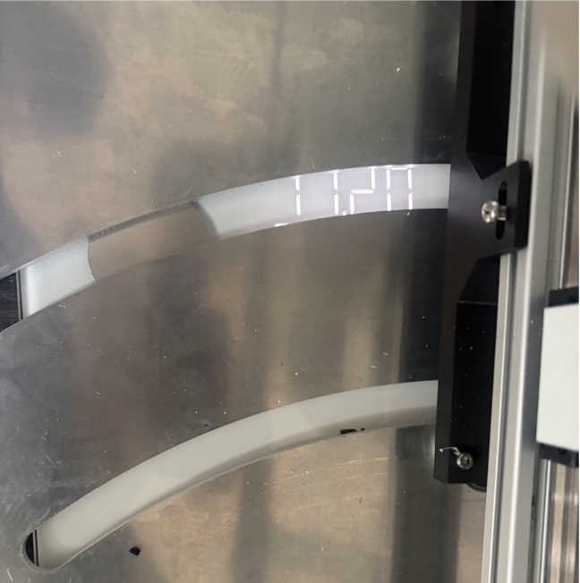
Figure 17.
The measured weight of the device was found to be within the specified limit of ≤ 13 kg, confirming compliance with the portability requirement and ensuring ease of transport and handling in rehabilitation settings such as community care facilities (Figure 17).
4.1.2 Size Test
The measured dimensions indicate that while the device length meets the specified requirement of 100 cm, both the width and height exceed the allowable limits of 33 cm. This deviation from the target specification of 100 × 33 × 33 cm suggests that further design optimisation is required to improve the device’s compactness and compliance with dimensional constraints (Figure 18, 19 and 20).
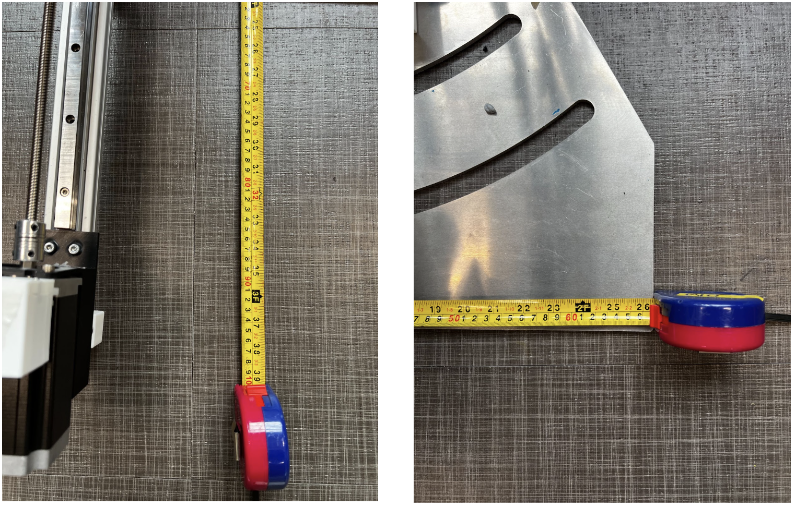
Figure 18. Length (left), Width (right)
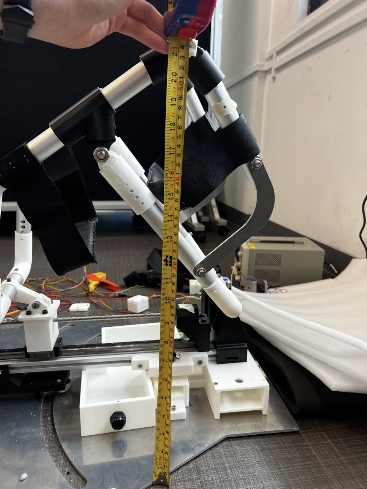
Figure 19. Height
4.1.3 ADL range of motion test
The figure below shows how the lateral movements are tracked on the Tracker software (Figure 20).
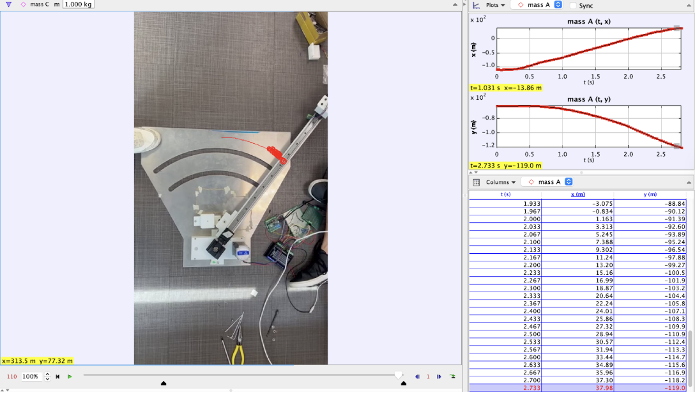
Figure 20. Hip Abduction and Adduction angle tracking on structure
The moving coordinates are then converted into angles using the formula (Figure 21 and 22):
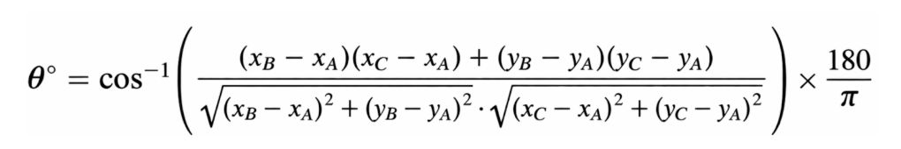
Figure 21.Formula for conversion of coordinates to angle.
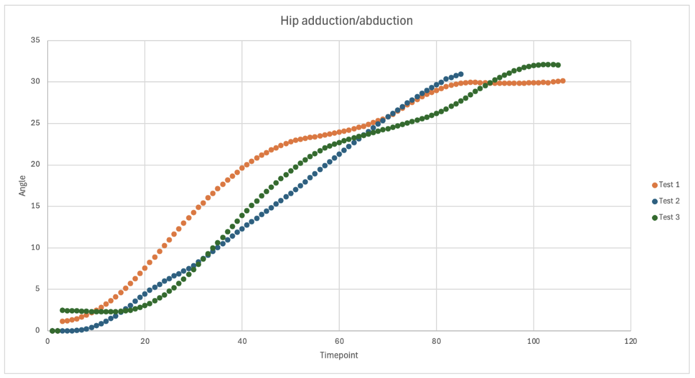
Figure 22. Results for 3 samples of lateral motion.
The maximum hip and knee joint angles were quantified using the protractor measurement tool within the software, as illustrated in the figures below (Figure 23 and 24).
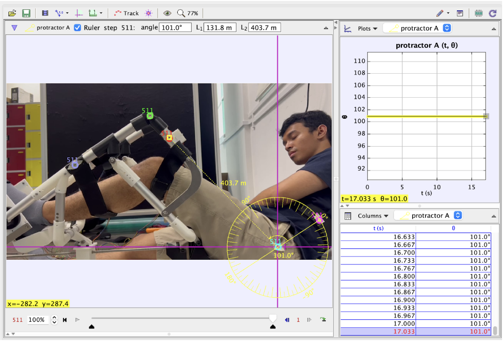
Figure 23. Maximum Hip Angle on structure.
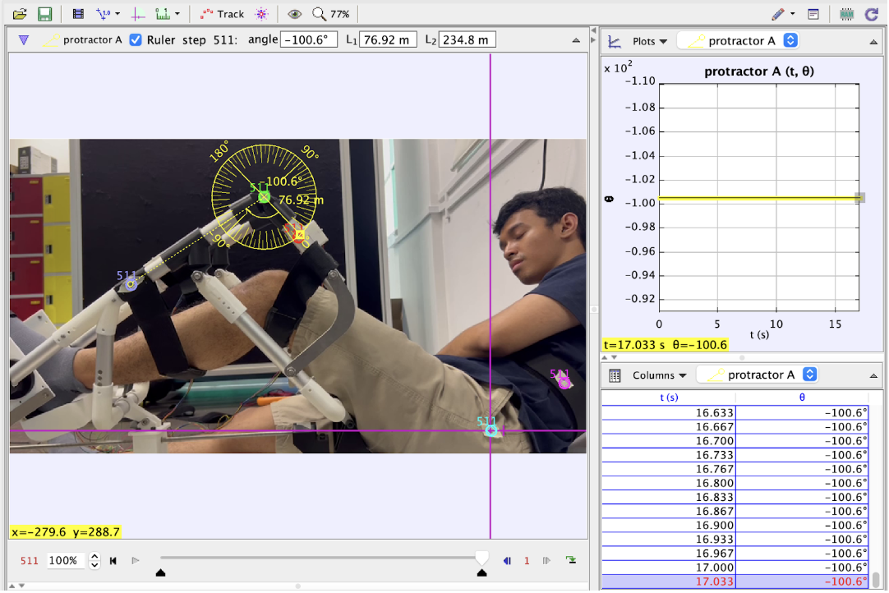
Figure 24. Maximum Knee Angle on structure.
| Movement | Test 1 (°) | Test 2 (°) | Test 3 (°) | Average (°) | Requirement (°) |
|---|---|---|---|---|---|
| Hip Adduction | 30.9 | 30.1 | 32.0 | 31.0 | 0–15 |
| Hip Abduction | 30.9 | 30.1 | 32.0 | 31.0 | 0–15 |
| Hip Flexion | 101.1 | 100 | |||
| Knee Flexion | 100.6 | 120 | |||
Table 6. DT3 ADL Range of Motion Test Results
The measured joint angles were within the specified ADL range of motion and maximum limits for all targeted joints, demonstrating overall compliance with functional rehabilitation requirements (Table 6). However, the knee flexion range did not achieve the required maximum value, indicating a design limitation. This highlights the need for further mechanical optimisation to enhance adjustability and enable the full intended range of motion.
4.1.4 Aluminium Tube Load Test
As detailed in the Interim Report, simulation results yielded a minimum Factor of Safety (FoS) of 28, indicating that the structure can withstand approximately 28 times the applied load before failure. Subsequent inspections following full frame assembly further confirmed that the structure is capable of safely supporting loads during user testing (Figure 25).
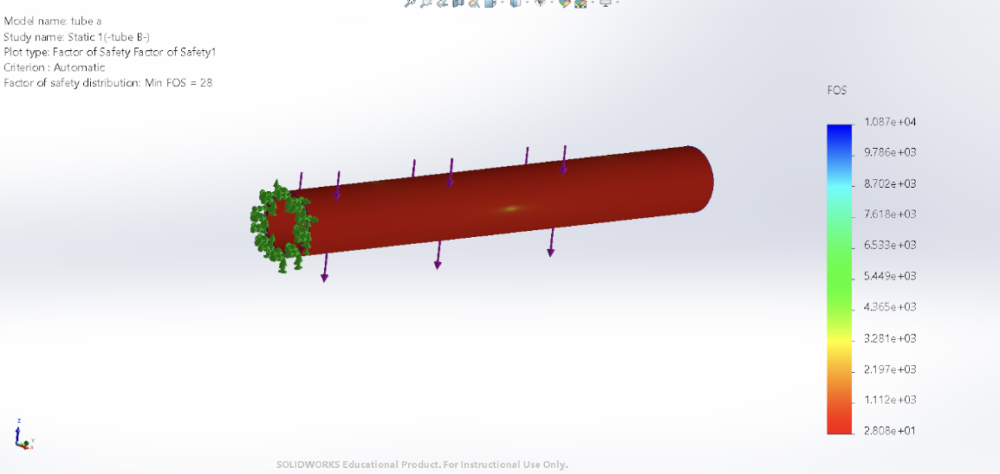
Figure 25.
4.1.5 Durability Test
This test aims to see whether the device is able to run a certain number of cycles and durations without any issue in the structural and mechanical part. Our based line number for the test is 10 cycles with durations of 5 minutes. The result is the device able to run based on the design specification requirement.
4.1.7 Mechanical Design Iteration
To address this issue, the design was modified by relocating the arc rail beneath the linear actuator and the main structural sub-assembly. This configuration improves load distribution by allowing the structural frame to directly support the applied forces, thereby reducing bending moments acting on the arc rail slider. The revised design also increases the effective contact area between structural components, improving overall stability and reducing the likelihood of deformation during operation (Figure 27).
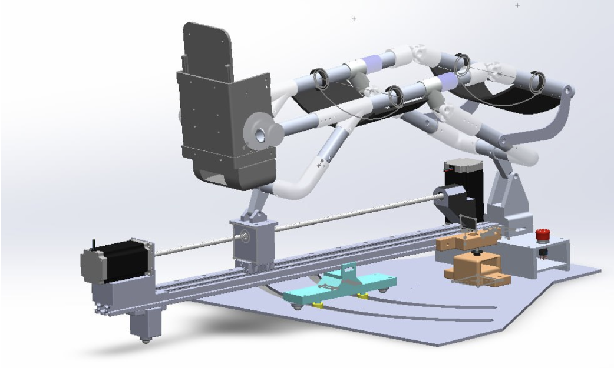
Figure 26.
After further consideration of the price range of the curve rail we opted to use a custom middle section design connected to the main frame, which is sufficient for our needs (Figure 28).
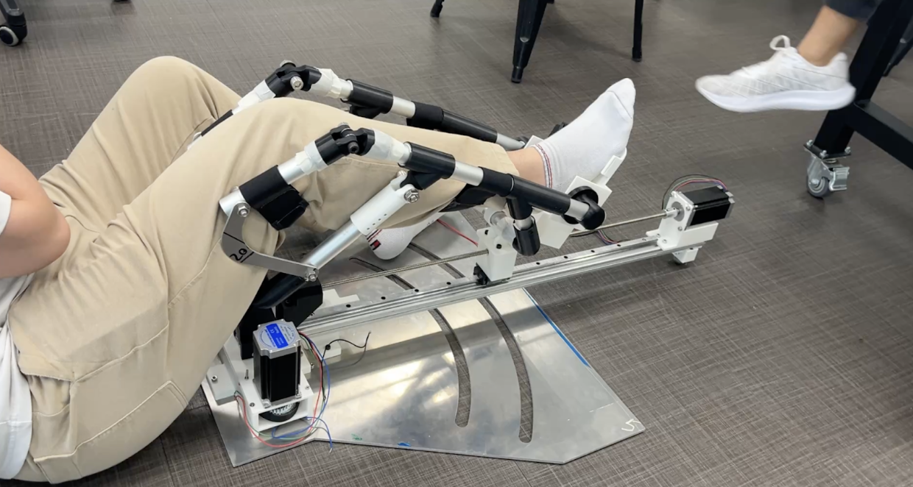
Figure 27.
4.1.8 Mechanical Design Short comings
4.1.8.1 Middle Structure Section
While assembling the overall device for the first time there were issues with the stability middle section with the supports starting to bend due to the vertical load. On top of that, the mounting holes for the section are hard to reach thus making it hard for any maintenance (Figure 29).
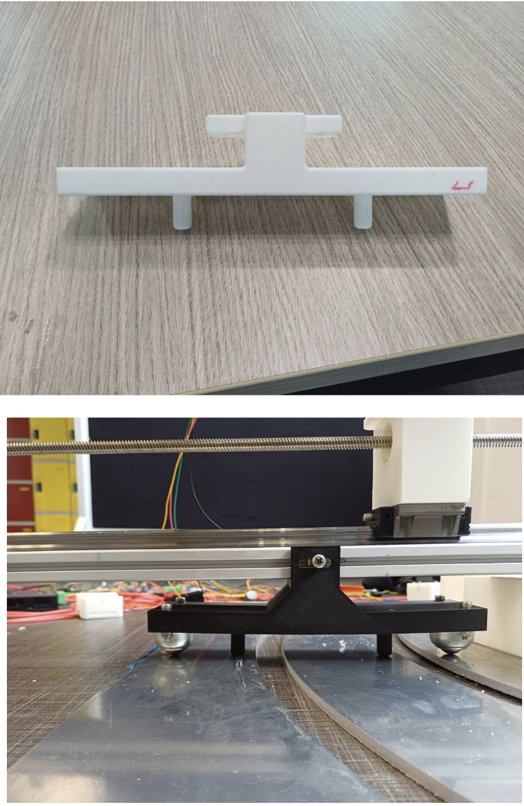
Figure 28.
To resolve this issue, ribs were added to the structure and mountings were shifted towards a more accessible angle.
4.1.8.2 Belt Lateral mechanism
During the development phase, tightening issues were encountered with the belt used for the lateral mechanism (Figure 30).
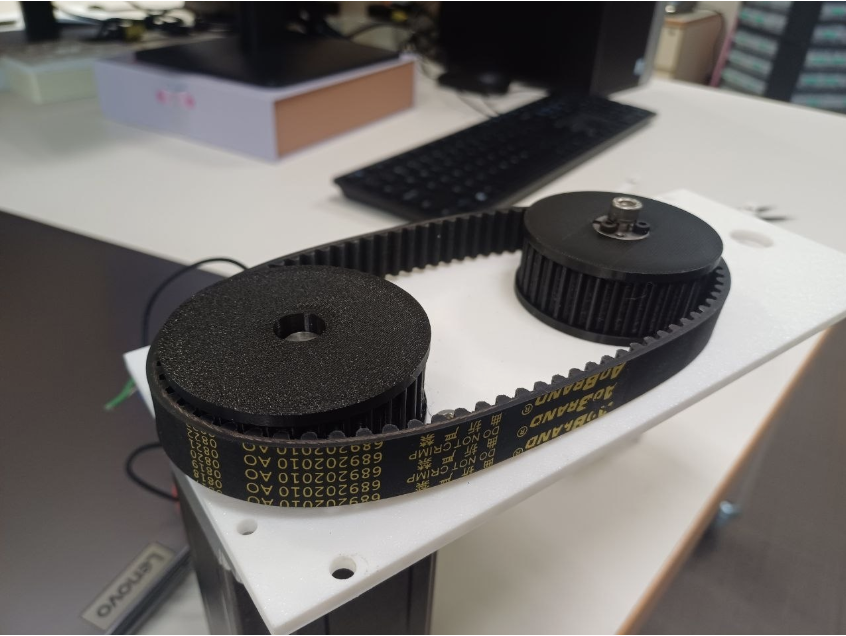
Figure 29.
The mechanism consists of two pulleys connected by a timing belt, with one pulley mounted to the stepper motor and the other to the main structure. To address tensioning issues, a belt tensioner was initially designed and implemented using 3D-printed components (Figure 31).
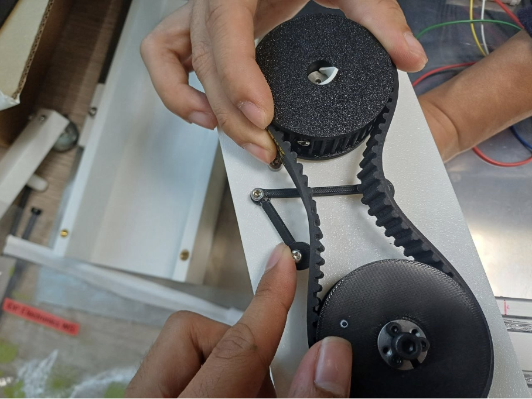
Figure 30.
The 3D printed parts did not manage to sustain the friction and bending force. Thus, we opted to use a shorter timing belt which resolved this issue.
4.1.8.3 Lateral Driving Shaft
Another issue encountered involved the lateral shaft connected to the main structure for side-to-side motion. Initially, a shaft torque lock was used to secure the shaft through outward expansion; however, this was later replaced with a nut-based fastening method to provide a more stable and reliable fixation (Figure 32).
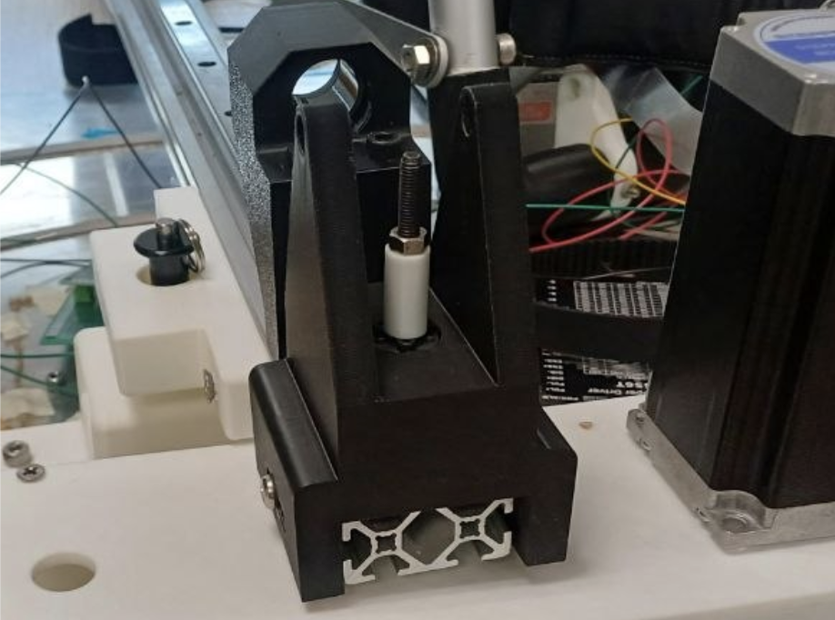
Figure 31.
The limitation of this design was that it relied solely on friction between the 3D-printed components and the shaft, resulting in insufficient clamping force and slippage. To resolve this, the system was revised to use a flange coupler with mounting holes, and the shaft was changed to a 6 mm round shaft with a field D-profile end to improve torque transmission and mechanical locking (Figure 33).
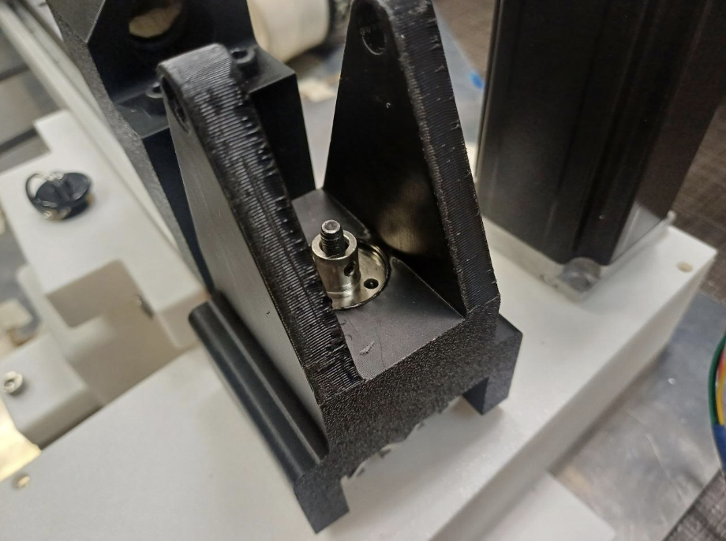
Figure 32.
The D-profile was introduced to provide a flat surface for the flange coupler’s set screw, ensuring a more secure grip and preventing slippage. As a result, the mechanism was able to achieve lateral movement.
4.2 Sensing Sub-System
The table (Table 7) below provides a list of tests conducted for the sensing sub-system.
| Test Code | Name of Test | Design Specification Addressed | Purpose of Test |
|---|---|---|---|
| ST1 | Force Sensor Calibration Test | N/A | Verify the relationship between voltage output of the force sensor configuration and the applied force |
| ST2 | IMU Orientation Response Test | N/A | Verify the acceleration values of the IMU |
| ST3 | IMU Joint Accuracy Test | N/A | Verify the accuracy of joint angle measurements using IMU data |
| ST4 | Plantar Force Sensing Test | A1 | Verify the performance of plantar force sensing configuration by comparing values of the true weight and recorded weight |
| ST5 | Medial-Lateral Force Sensing Test | A2 | Verify the performance of medial-lateral force sensing configuration by comparing values of the true weight and recorded weight |
| ST6 | Thigh Force Sensing Test | A3 | Verify the performance of plantar force sensing configuration by comparing values of the true weight and recorded weight |
| ST7 | IMU Accuracy and Maximum Range Test | A4, A5 | Verify if IMU accuracy and maximum range matches the design specification values of 12° and 150° respectively |
4.2.1 ST1 Force Sensor Calibration Test
The ST1 force sensor calibration procedure and associated results are detailed in the interim report and are not reproduced here. Briefly, known masses spanning the operational range were applied incrementally, and the resulting resistance measurements were tabulated. The results confirm an inverse exponential relationship between applied force and resistance, consistent with the characteristic response of piezoresistive force sensors (Figure 34).
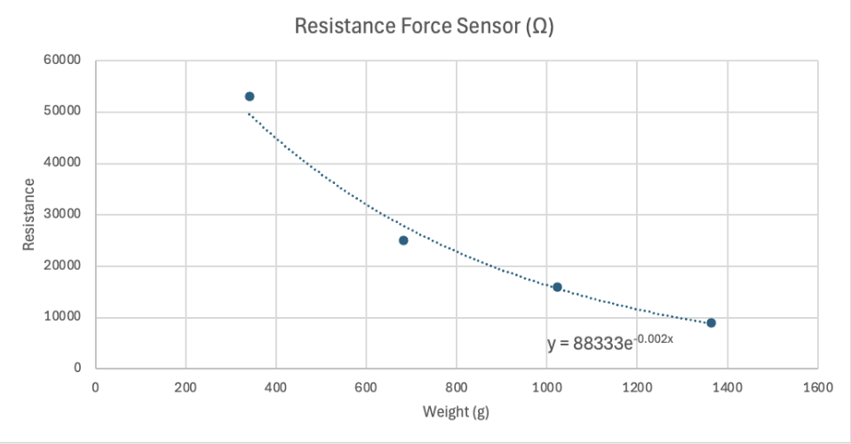
Figure 33.
4.2.2 ST2 IMU Orientation Response Test
The table below describes the test procedure used to verify the acceleration values of the IMU. The test procedure for ST2 can be seen in Appendix O.
Results:
The table (Table 8) below presents the measured acceleration values recorded by the IMU across six orthogonal orientations, alongside the expected gravitational acceleration values and the corresponding error for each axis.
| Orientation | Axis | Expected (g) | Measured (g) | Error (%) |
|---|---|---|---|---|
| Flat (face up) | X | 0.00 | 0.10 | +100 |
| Y | 0.00 | −0.12 | −100 | |
| Z | 9.81 | 8.72 | −11.1 | |
| Right side up (X-axis vertical) | X | 9.81 | 8.45 | −13.9 |
| Y | 0.00 | −0.15 | −100 | |
| Z | 0.00 | 0.14 | +100 | |
| Front face up (Y-axis vertical) | X | 0.00 | −0.09 | −100 |
| Y | 9.81 | 8.58 | −12.5 | |
| Z | 0.00 | 0.15 | +100 |
Table 8.
The IMU readings were consistent with expected gravitational values, confirming correct orientation sensing.
4.2.3 ST3 IMU Joint Accuracy Test
The table (Table 9) below describes the test procedure used to verify the accuracy of IMU-derived joint angle measurements against reference angles obtained from both a physical protractor and pose estimation tracking software. The exercise of knee flexion was chosen to demonstrate joint accuracy capabilities of the IMU sensor following the angles depicted in Figure 35.
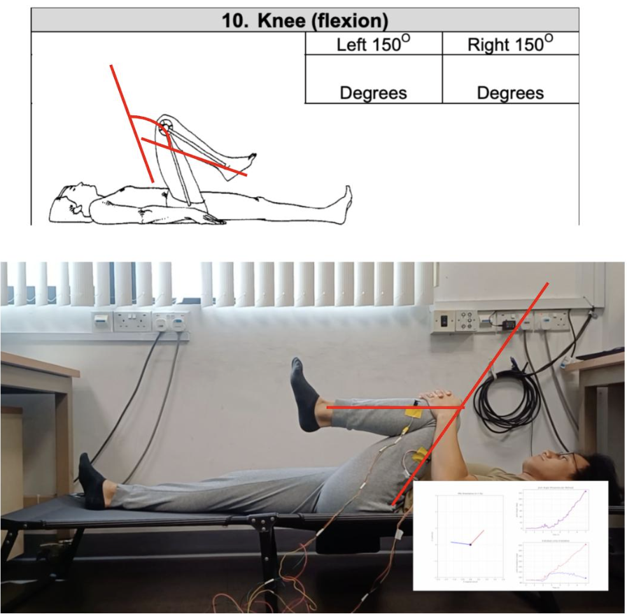
Figure 34.
| Step | Procedure |
|---|---|
| 1 | Attach the IMU modules to the relevant limb segments according to the intended sensing configuration. |
| 2 | Position the subject or limb model so that the target joint angle can be set and maintained. |
| 3 | Measure the reference joint angle using a protractor. |
| 4 | Simultaneously record the motion using pose estimation tracking software to obtain an additional reference measurement. |
| 5 | Capture the corresponding joint angle output from the IMU subsystem. |
| 6 | Repeat the measurement for multiple joint positions across the intended range of motion. |
| 7 | Compare the IMU-derived joint angles with the reference angles obtained from the protractor and pose estimation tracking software. |
| 8 | Calculate the angle error for each trial to evaluate the accuracy of the IMU-based joint angle estimation. |
Table 9.
Result:
While the ideal MSE is below 12° to outperform “by-eye” clinical judgment, our results showed that the IMU was not able to consistently achieve this error (Figure 36).
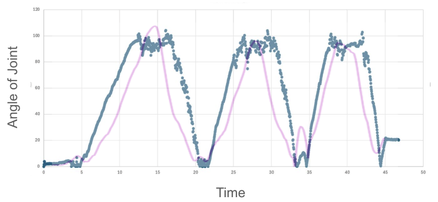
Figure 35.
The IMU signal exhibits both overestimation and underestimation of joint angles at critical moments. These inconsistencies contribute to elevated error values, preventing reliable adherence to the <12° MSE benchmark. Full results are contained in Appendix K-N due to the volume of data.
4.2.4 Test Shortcoming and Proposals
The observed angular errors are suspected to arise from reliance on accelerometer data alone, which is sensitive to dynamic acceleration components during movement. When the limb is in motion, non-gravitational accelerations are superimposed on the gravitational signal, causing the computed joint angles to deviate from the true orientation.
To address this, future iterations should incorporate gyroscope data alongside the accelerometer through a sensor fusion approach such as a Kalman filter, which combines the low-frequency accuracy of the accelerometer with the short-term precision of the gyroscope to produce more stable and reliable angle estimates across the full range of motion.
Additionally, the current test configuration did not constrain the physical mounting of the IMU modules, introducing variability in sensor tilt and alignment between trials. A dedicated IMU holder, designed to mount rigidly onto the device frame and align each sensor consistently with the limb segment axis, would reduce placement-dependent error and improve repeatability across patients and sessions. The design of such a holder is proposed as part of the sensing subsystem iteration.
4.2.5 ST1 Force Sensor Calibration Test
The table (Table 10 and 11) below shows the critical and target force readings we require based on a 100 kg and 150 kg payload (Figure 37).
| Sensors used | Nested Subsystem | Critical Weight (kg) | Maximum Critical Force Per Sensor (N) | Target Weight (kg) | Maximum Target Force Per Sensor (N) |
|---|---|---|---|---|---|
| 13 | Plantar Force Sensing | 100 | 75.4 | 150 | 113.2 |
| 2 | Medial–Lateral Force Sensing | 20 | 98.1 | 35 | 147.2 |
| 2 | Thigh Force Sensing | 30 | 147.2 | 45 | 220.7 |
Table 10.
| Step | Procedure |
|---|---|
| 1 | Identify the sensing subsystems to be calibrated: plantar force sensors (13 sensors), medial–lateral force sensors (2 sensors), and thigh force sensors (2 sensors). |
| 2 | Determine the target and critical force values per sensor based on expected payloads (100 kg and 150 kg users) as specified in Table 19. |
| 3 | Assemble the force sensor circuit using the LM324N operational amplifier configuration recommended by the manufacturer. |
| 4 | Configure the voltage divider to generate the reference voltage using R1 = 40 kΩ and R2 = 5 kΩ, producing Vref = 0.5 V from a 4.5 V supply voltage (Vss). |
| 5 | Set the feedback resistor Rref = 2 kΩ to maintain sensitivity while ensuring the output voltage remains within the microcontroller input range. |
| 6 | Connect the force sensor to the op-amp circuit and the microcontroller ADC input. |
| 7 | Apply a series of known calibration weights to the force sensor. |
| 8 | Record the sensor resistance values and corresponding voltage outputs for each applied weight. |
| 9 | Tabulate the resistance values against the applied loads. |
| 10 | Plot the force–voltage relationship curve to determine the calibration equation for converting sensor voltage readings into applied force values. |
| 11 | Repeat the calibration procedure for all force sensors across the plantar, medial–lateral, and thigh sensing subsystems. |
Table 11.
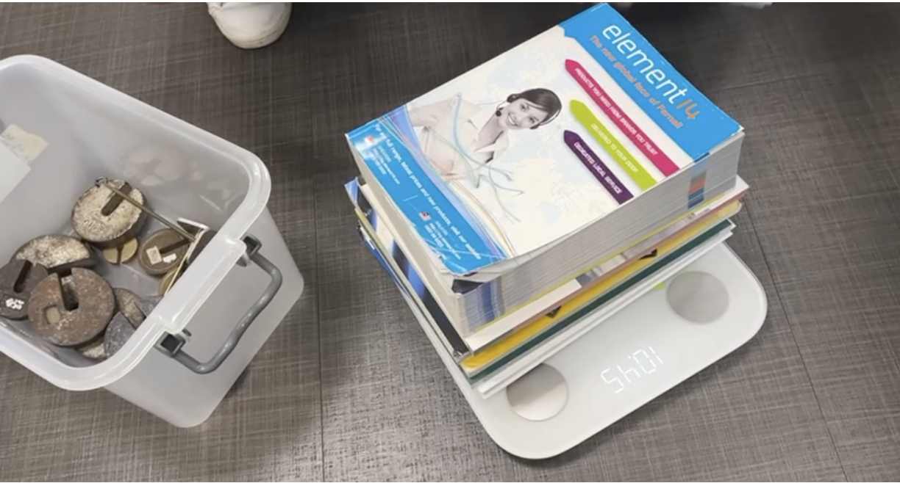
Figure 36.
4.2.6 ST4, ST5 and ST6 Force Sensing Subsystems
Initial calibration and validation of the force-sensor subsystem showed that although the sensors were able to capture force trends, their accuracy was lower than desired for reliable biomechanical monitoring. In particular, the force sensors exhibited greater deviation from the ideal relationship and a higher root mean square error (RMSE). The table (Table 12) below shows the error percentage between the actual weight and the predicted weight by the A301 force sensors.
| Actual weight (g) | Predicted weight (g) | Error (%) |
|---|---|---|
| 2167.37 | 1558.57 | 28.09 |
| 2457.69 | 2130.00 | 13.33 |
| 2500.00 | 1344.29 | 46.23 |
| 3373.08 | 4744.29 | 40.65 |
| 3653.85 | 3558.57 | 2.61 |
| 6261.11 | 6515.71 | 4.07 |
| 8050.00 | 9101.43 | 13.06 |
| 9744.44 | 9672.86 | 0.73 |
| 12528.57 | 11387.14 | 9.11 |
Table 12.
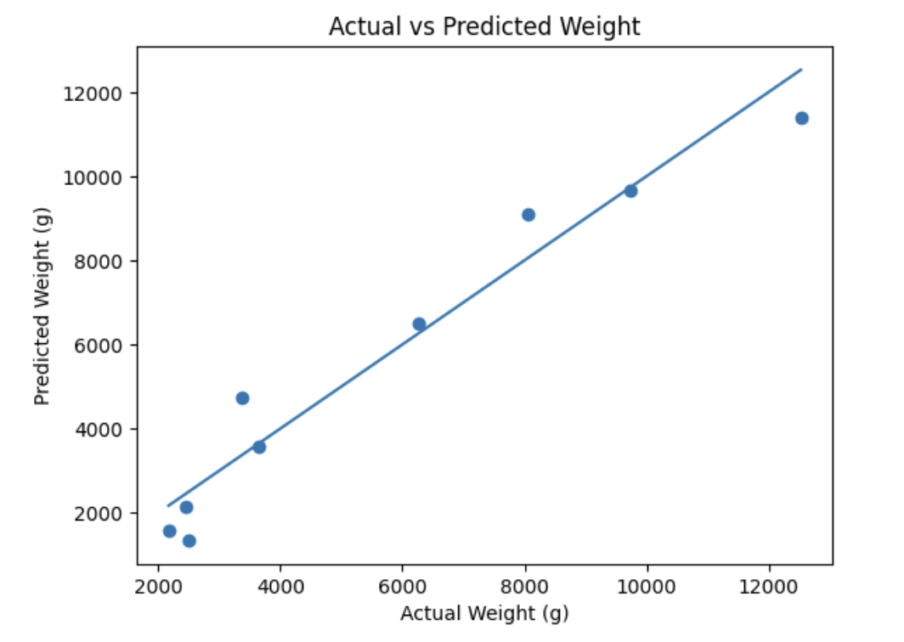
Figure 37.
From the graph, an RMSE of 828.74 g indicates moderate prediction error, with greater deviation observed at lower weight ranges, suggesting non-linearity or reduced sensor sensitivity in this region. Load cells were therefore investigated as an alternative sensing approach because they are commonly used for direct force measurement, offer more stable output under compression, and are generally less sensitive to placement and contact variability than thin-film force sensors.
| Step | Procedure |
|---|---|
| 1 | Mount the load cells securely onto the load bearing component in the intended orientation. |
| 2 | Apply a series of known weights incrementally to the load cells. |
| 3 | Record the detected force values corresponding to each applied load. |
| 4 | Repeat the measurements for multiple loading points covering the intended force range. |
| 5 | Calculate the RMSE between detected and actual force values. |
Table 13.
Results:
The table below presents the plantar force sensing test results for both the load cell and force sensor configurations. Known weights were applied incrementally up to the critical value of 100 kg (approximately 981 N), representing the maximum expected plantar load under operational conditions, and the corresponding detected force values were recorded for each sensing approach.
| Load Cells | Force Sensor | ||
|---|---|---|---|
| Actual (N) | Detected (N) | Actual (N) | Detected (N) |
| 0 | 0 | 0 | -20.41 |
| 11.18 | 10.87 | 269.75 | 276.77 |
| 100.55 | 99.43 | 555.75 | 450.06 |
| 237.7 | 234 | 634.66 | 598.65 |
| 544.95 | 520.33 | ||
| 555.74 | 530 | ||
| 626.07 | 579.67 | ||
| 873.29 | 790 | ||
| 1000 | 928.33 | ||
Table 14. ST4 Plantar Force Sensing Test Results
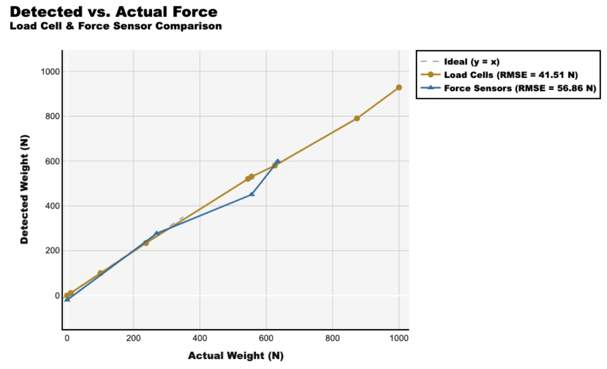
Figure 38.
The table (Table 15) below presents the medial-lateral force sensing test results for both the load cell and force sensor configurations. Known weights were applied incrementally up to the critical value of 20 kg (approximately 98.1 N), representing the maximum expected plantar load under operational conditions, and the corresponding detected force values were recorded for each sensing approach.
| Load Cells | Force Sensor | ||
|---|---|---|---|
| Actual (N) | Detected (N) | Actual (N) | Detected (N) |
| 0 | 0 | 0 | -0.84 |
| 4.91 | 3.76 | 24.55 | 32.28 |
| 53.96 | 6.57 | 48.96 | 28.73 |
| 107.91 | 83.52 | 73.58 | 67.18 |
| 154.51 | 114.6 | 103.99 | 29.01 |
| 202.58 | 151.6 | 123.61 | 73.67 |
| 256.04 | 262.59 | 127.53 | 111.97 |
| 295.28 | 304.67 | 181.8 | 101.23 |
| 210.36 | 107.3 | ||
| 220.73 | 133.46 | ||
| 248.62 | 145.14 | ||
| 279.78 | 134.4 | ||
Table 15. ST5 Medial-Lateral Force Sensing Test Results
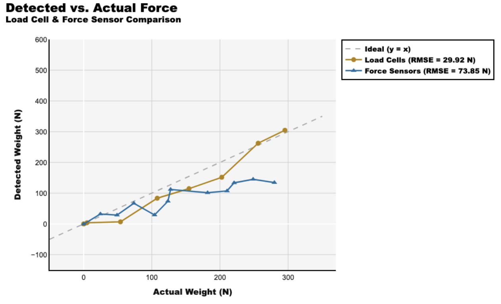
Figure 39.
The table (Table 16) below presents the medial-lateral force sensing test results for both the load cell and force sensor configurations. Known weights were applied incrementally up to the critical value of 30 kg (approximately 147.2 N), representing the maximum expected plantar load under operational conditions, and the corresponding detected force values were recorded for each sensing approach.
| Load Cells | Force Sensor | ||
|---|---|---|---|
| Actual (N) | Detected (N) | Actual (N) | Detected (N) |
| 0 | 0 | 0 | -1.68 |
| 9.81 | 10.87 | 49.09 | 64.57 |
| 49.54 | 49.11 | 105.95 | 57.46 |
| 110.36 | 90.03 | 141.94 | 134.37 |
| 148.13 | 124.14 | 196.22 | 58.03 |
| 196.69 | 175.23 | 303.65 | 204 |
| 245.25 | 258.56 | 432.31 | 345.67 |
| 299.7 | 265.81 | ||
| 348.75 | 351 | ||
| 406.53 | 393.49 | ||
| 450.34 | 452.64 | ||
Table 16. ST6 Thigh Force Sensing Test Results
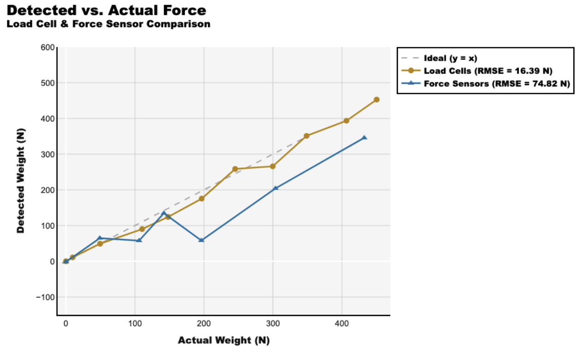
Figure 40.
Figure 38, 39 and 40 present three comparisons between load cell and force sensor measurements against actual applied weights. In all three plots, the load cells demonstrate closer alignment with the ideal line (y = x), with RMSE values of 41.51 N, 29.92 N, and 16.39 N for Plantar force, Medial-Lateral, and Thigh force sensing subsystems respectively. In contrast, the force sensors show substantially larger deviations, with RMSE values of 56.86 N, 73.85 N, and 74.82 N. These results indicate that load cells provide more reliable and accurate force detection for the Kinetix device, making them the preferred sensor type for clinical resistance and range-of-motion applications.
4.2.7 Footrest Design
Following confirmation of the suitability of the load cells, the footrest subsystem was designed to fulfill both mechanical and sensing requirements within the lower-limb rehabilitation device. The key functional objectives were to:
- Withstand plantar and lateral forces applied during rehabilitation exercises
- Enable accurate measurement of plantar and lateral forces
- Accommodate a wide range of user foot sizes based on anthropometric data
- Minimise structural deformation to preserve sensing accuracy
- Integrate seamlessly with the selected force-sensing system
These requirements formed the basis for evaluating each design iteration (Figure 41).
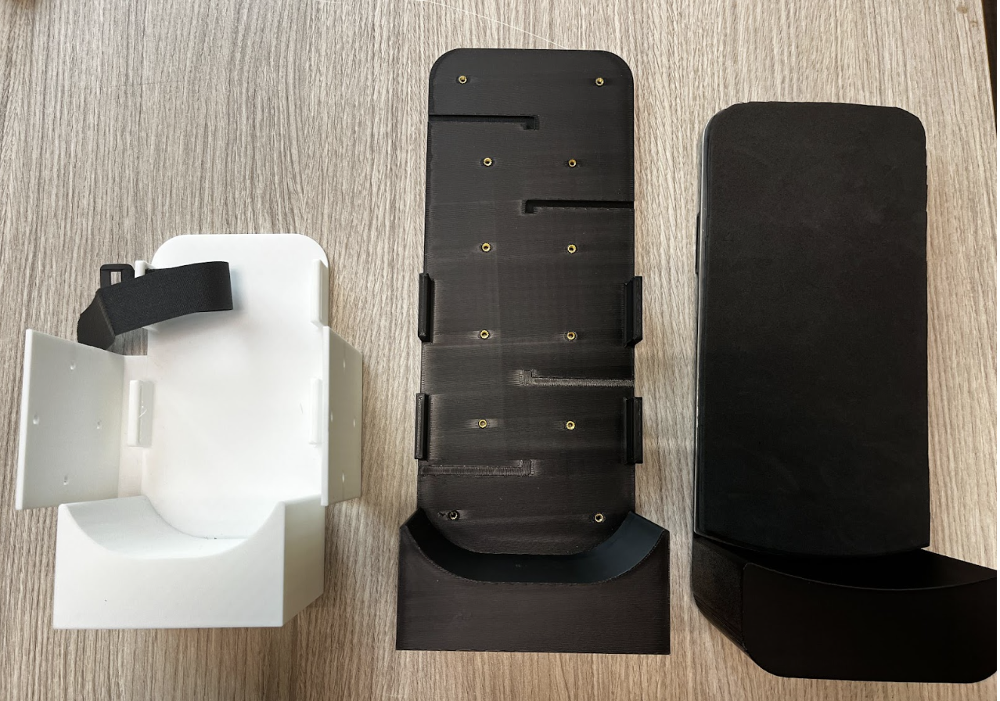
Figure 41.
4.2.7.1 Iteration 1: Initial Prototype
The initial design, developed during the interim phase, featured a compact footrest. While the design was lightweight and simple to implement, it was observed that the footrest area was insufficient to accommodate users with larger foot sizes (Figure 42).
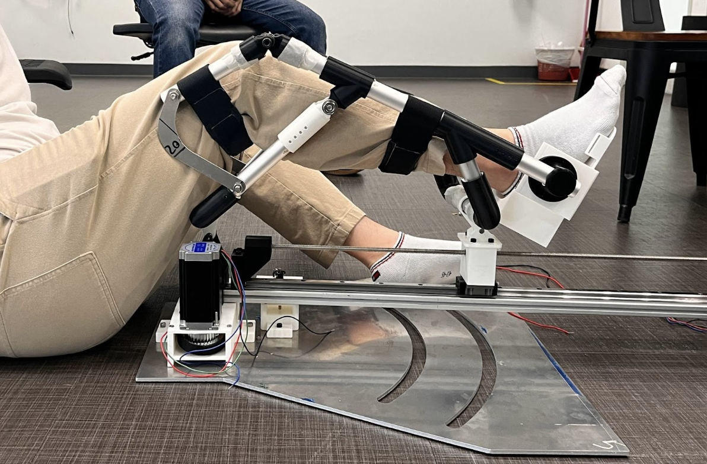
Figure 42.
As shown, this resulted in improper foot positioning, which affected both usability and measurement consistency. Consequently, the design did not meet anthropometric requirements and required further modification.
4.2.7.2 Iteration 2: Anthropometric Scaling
To address the limitation in foot coverage, the footrest length was increased to 32 cm based on anthropometric data of Singaporean populations through research done by Lee et al. (2015). This adjustment ensured that the design could accommodate the majority of users.
However, experimental testing revealed that the increased length led to structural deformation under load. The footrest exhibited noticeable warping when subjected to plantar forces, which adversely affected the reliability of the force-sensing subsystem (Figure 43).
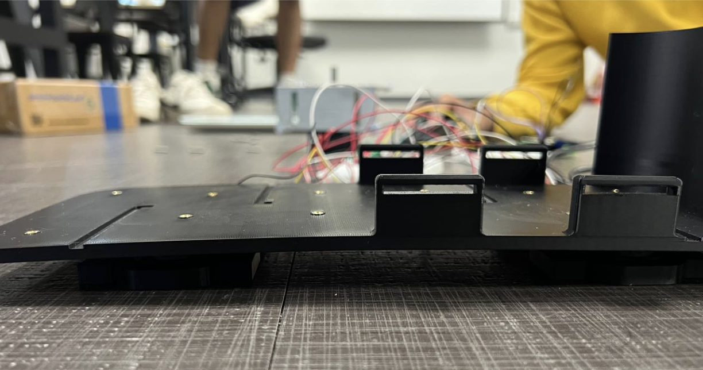
Figure 43.
This iteration demonstrated that while anthropometric requirements were satisfied, mechanical stability was compromised.
4.2.7.3 Iteration 3: Structural Optimisation and Reinforcement
To resolve the structural instability, the footrest length was reduced from 32 cm to 26.2 cm. In addition, an aluminum plate and two aluminum ribs were introduced to reinforce the structure (Figure 44).
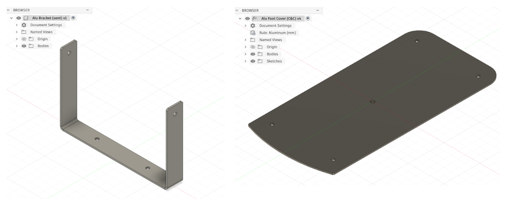
Figure 44.
These modifications were guided by mechanical principles, where reducing the span length decreases bending deformation, and the addition of reinforcement increases structural stiffness. The revised design achieved a balance between user accommodation and mechanical integrity.
Testing showed a significant reduction in deformation, resulting in improved stability and more reliable force measurements. Although there was a slight reduction in maximum foot size accommodation, the design remained suitable for the intended user population.
4.2.7.4 Iteration 4: Sensing System Redesign
During development, an alternative sensing approach was evaluated. The initial use of thin-film force sensors was found to be limited by high percentage error rates. As a result, the sensing system was redesigned to incorporate load cells.
The new design was inspired by the operating principle of electronic weighing scales, which utilise ground reaction forces for measurement. As shown in the diagram, the load cells were positioned such that applied forces from the foot are transmitted through the structure to generate measurable signals. In addition, groves were also made on the structure for the circular section of the load cells to slip in to prevent slipping (Figure 45).
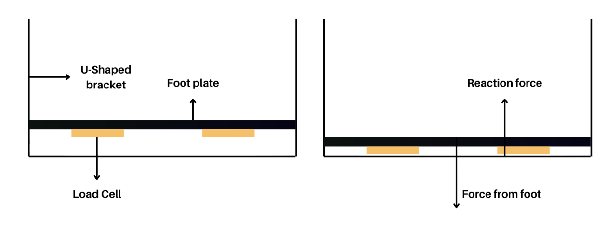
Figure 45.
This transition significantly improved measurement accuracy, repeatability, and overall system robustness.
4.2.7.5 Iteration 5: Integration and System Refinement
Following the adoption of load cells, further refinements were made to optimise system integration. A dedicated compartment was incorporated within the footrest to house amplifiers, reducing wire length and minimising the risk of wire damage. Additionally, the position of the Velcro strap slots was shifted from the centre to the upper region of the footplate (Figure 46).
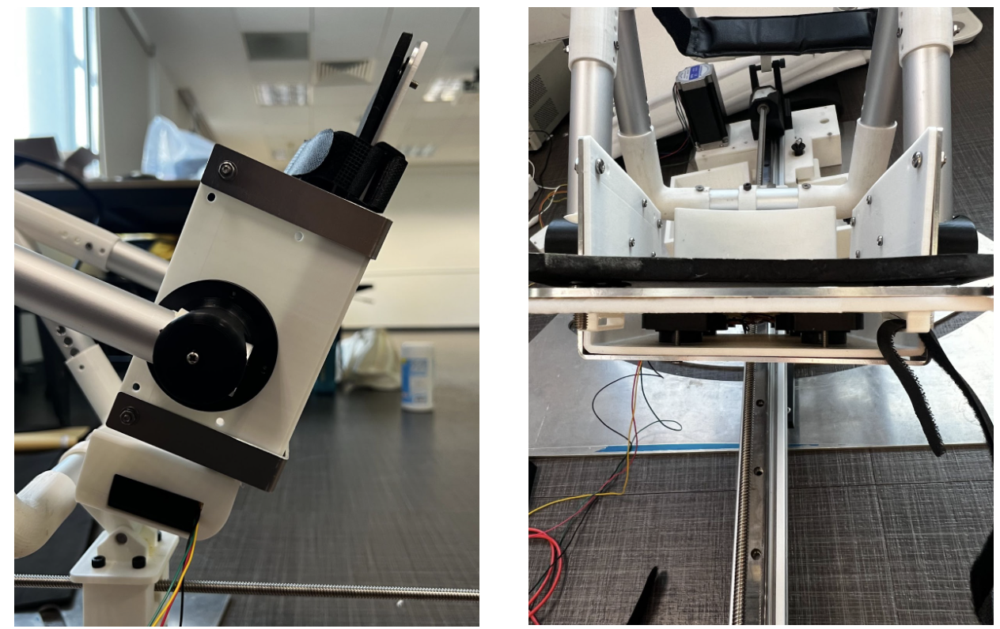
Figure 46. Full integrated images of the footplate (left), close-up view of load cells in grooves (right)
The final footrest design integrates both structural and sensing considerations. The reinforced structure ensures minimal deformation under load, while the load cell-based sensing system provides accurate and reliable force measurements. The design also incorporates improved user interface features, such as optimised strap placement and adequate foot support, enhancing overall usability.
The CAD model below illustrates the integration of the ankle-sensing component. The design comprises two plates mounted onto a U-shaped bracket with a controlled clearance. This allowance enables the plates to translate towards the bracket under applied load, thereby generating a measurable normal force. The same force transmission principle is applied in the plantar force sensing mechanism to ensure consistent and accurate force detection (Figure 47).
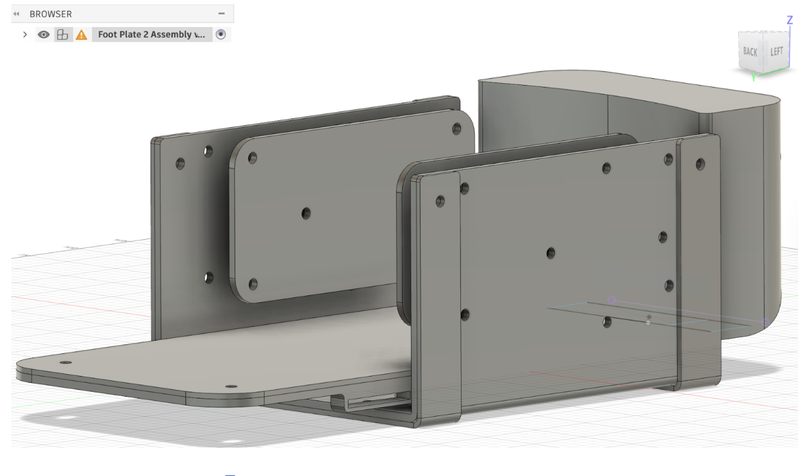
Figure 47. CAD Assembly of foot plate structure
Each iteration addressed specific limitations identified through testing, resulting in continuous improvement.
Key advancements include the following:
- Improved anthropometric compatibility
- Enhanced structural stability through reinforcement
- Transition to a more reliable sensing system
- Optimised integration of mechanical and electrical components
Overall, the final design reflects a well-evaluated and comprehensive approach, integrating engineering principles, experimental validation, and user requirements.
4.2.8 Thigh force sensing Design
The thigh subsystem was designed to fulfill sensing requirements within the lower-limb rehabilitation device.
The key functional objectives were to:
- Enable accurate measurement of flexion forces
- Accommodate a wide range of user thigh sizes based on anthropometric data
To ensure effective force transmission and user compatibility, the contact interface was designed with reference to thigh circumference anthropometric data adapted from Nike.com. Based on this data, a contact arc of 60 degrees was derived to provide sufficient surface contact with the thigh during force exertion. This design ensures measurement accuracy while maintaining user comfort across different body sizes (Figure 48).
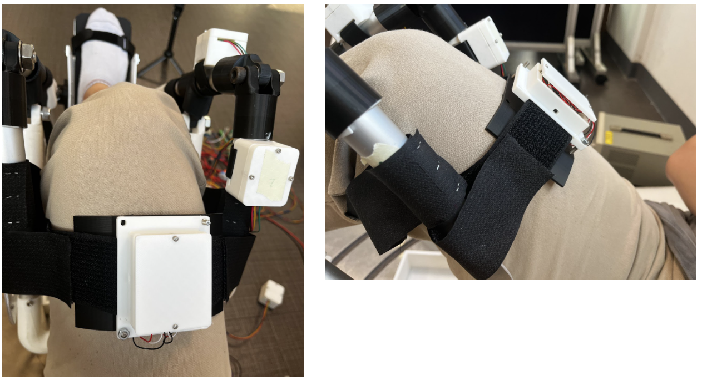
Figure 48. Images of the thigh force sensing sub-system
In addition, similarly to the footrest design, the thigh force sensing structure also has an electrical housing for the amplifiers that connects to the two load cells.
4.2.9 IMU Holder Design
The IMU holder was created to serve two purposes (Figure 49):
- Remain stable during the movement of the structure to reduce data-recording errors
- To serve as a protection against mechanical damage and splatter from wipe-down.
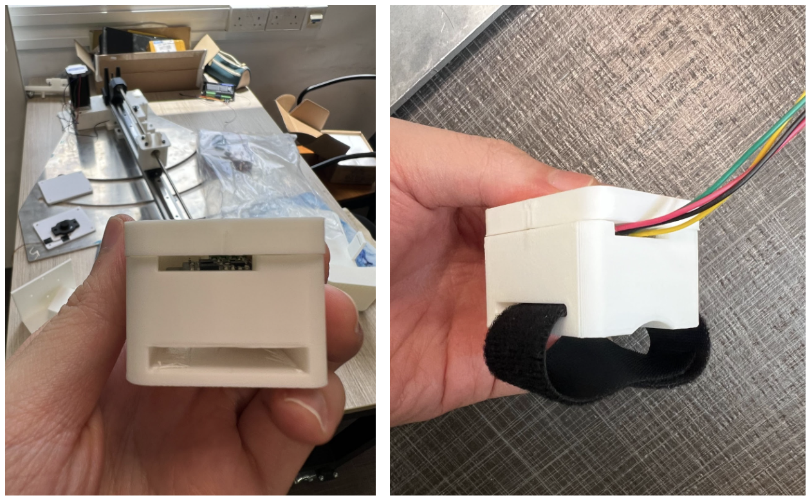
Figure 49. A side-by-side comparison of IMU iteration. Old design (left), Final design (right)
Iteration 1: Initial Holder Design
The initial IMU holder was designed with a flat base and enclosed structure to house and protect the sensor. This configuration provided adequate physical protection and ensured that the IMU was securely contained within the holder.
However, during testing under movement conditions, it was observed that the flat base did not conform well to the curved surface of the aluminum tube. This resulted in reduced contact area and insufficient frictional resistance, causing slight instability and potential displacement of the IMU during operation.
As shown in Figure 49, this limitation highlighted the need for improved geometric compatibility between the holder and the mounting surface.
Iteration 2: Curvature-Based Design
To address the instability observed in the initial design, the base of the IMU holder was redesigned to incorporate a curvature that matches the arc of the aluminum tube.
This modification increased the contact surface area between the holder and the mounting structure, thereby improving frictional grip and mechanical stability. The improved conformity reduced micro-movements of the IMU during dynamic operation, leading to more reliable and consistent data acquisition.
Additionally, the enclosed structure was retained to continue providing protection against mechanical impact and environmental exposure.
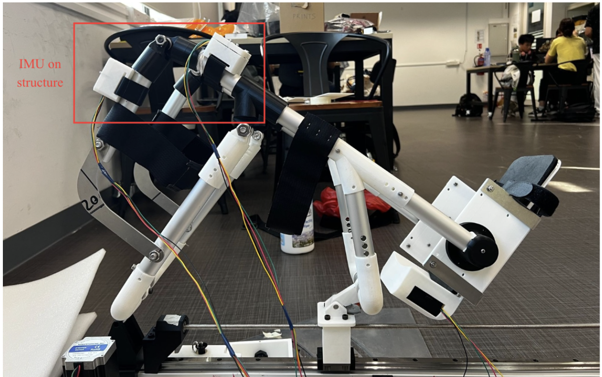
Figure 50. Image of IMU with holders attached on structure
4.2.10 Ultrasonic Sensor Holder Design Iteration
The ultrasonic sensor holder was created to serve two purposes (Figure 51):
- To place the sensors at strategic locations to detect the structure
- To serve as a protection against mechanical damage and splatter from wipe-down.
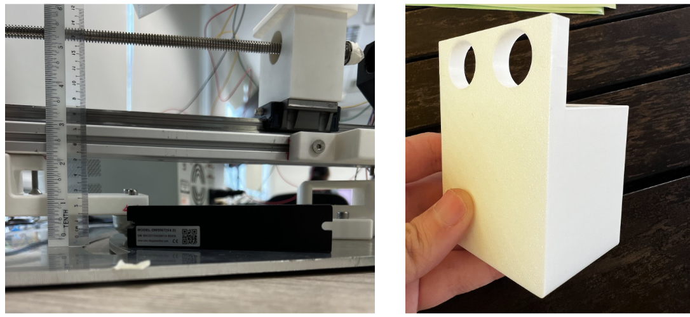
Figure 51. Design of ultrasonic sensor holder for lateral movement
In order for the ultrasonic sensor to be able to detect the lateral movement of the structure to prevent it from going out of range, it needs to be elevated to the same level as the aluminum rail. This elevation ensured that the emitted ultrasonic waves are directed accurately towards the rail, allowing reliable detection of lateral displacement and preventing the structure from moving beyond its intended range (Figure 52).
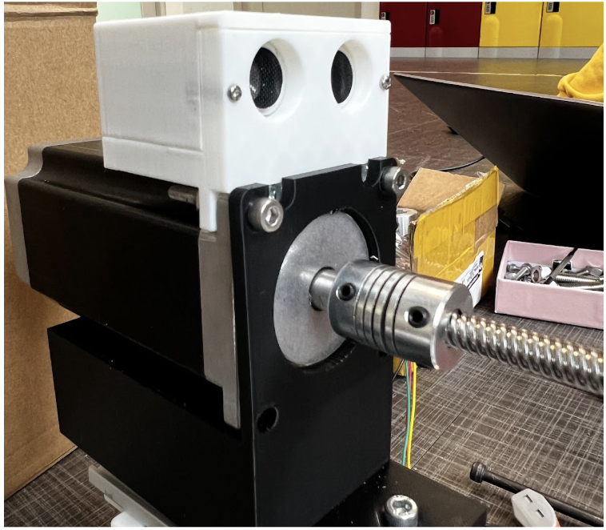
Figure 52. Design of ultrasonic sensor holder for linear movement
The design for the ultrasonic sensor to detect the linear motion involves designing the holder around the NEMA motor structure to ensure good fit for stability.
4.3 Electrical Sub-System
The table (Table 17) provides the list of tests that were conducted for the electrical sub-system.
| Test Code | Name of Test | Design Specification Addressed | Purpose of Test |
|---|---|---|---|
| ET1 | Voltage Output Verification Test | N/A | Verify that the voltage output of DC power subsystem is within datasheet tolerance |
| ET2 | I2C Multiplexer Functionality Test | N/A | Verify the operation of I2C Multiplexer |
| ET3 | Linear Range Test | N/A | Verify the duration that the rail can slide from the device’s maximum extension and flexion |
| ET4 | Passive and Active Mode Test | N/A | Verify motion performance in both active and passive rehabilitation modes |
4.3.1 ET1 Voltage Output Verification Test
Tables 18 and 19 provide the procedures of the voltage output verification test and its results respectively.
| Step | Procedure |
|---|---|
| 1 | Turn on the power supply and allow the system to stabilise. |
| 2 | Use a multimeter to measure the output voltage of the DC–DC converter, Raspberry Pi Pico 3.3 V output and LDO. |
| 3 | Record three voltage readings to ensure consistency and reduce measurement error. |
| 4 | Calculate the average voltage reading for each component. |
| 5 | Compare the average voltage against the expected output voltage specified in the component datasheets. |
Table 18.
| Output Node | Test 1 (V) | Test 2 (V) | Test 3 (V) | Average (V) | Requirement (V) |
|---|---|---|---|---|---|
| DC–DC Converter Output | 5.16 | 5.18 | 5.18 | 5.17 | 5 V ± 5% |
| LDO Output | 3.29 | 3.29 | 3.29 | 3.29 | 3.3 V ± 2% |
| Raspberry Pi Pico 2W 3.3 V Output Pin | 3.29 | 3.3 | 3.29 | 3.29 | 3.3 V ± 2% |
Table 19.
Result:
The measured output voltages were within the specified tolerance range of the component datasheets, confirming that the DC power subsystem delivers stable and regulated voltage suitable for reliable system performance. However, the 3.3 V output pin of the Raspberry Pi Pico 2W performed equally as the LDO, indicating that it is a reliable replacement as a 3.3 V power supply.
4.3.2 ET2 I2C Multiplexer Functionality Test
Tables 20 and 21 provide the procedures of the multiplexer functionality test and its results respectively.
| Step | Procedure |
|---|---|
| 1 | Connect the I2C multiplexer to the microcontroller and attach multiple IMU sensors to different channels of the multiplexer. |
| 2 | Upload the I2C communication program in Appendix G.2 to the microcontroller and initialise all connected devices. |
| 3 | Place each IMU sensor in distinct positions to produce different readings. |
| 4 | Read data from each IMU channel and record its output values. |
Table 20.
| IMU No. | Accel_x (m/s^2) | Accel_y (m/s^2) | Accel_z (m/s^2) |
|---|---|---|---|
| IMU1 | -0.863 | -0.392 | 9.414 |
| IMU2 | 0.196 | 5.492 | -8.826 |
| IMU3 | -0.118 | 1.530 | 9.454 |
Table 21.
Result:
The I2C multiplexer switched between multiple IMU channels, with each sensor producing distinct and consistent readings corresponding to its orientation. This confirms that the multiplexer enables reliable communication with multiple sensors over a shared I2C bus, supporting the sensing requirements of the KINETIX system.
4.3.3 ET3 Linear Range Test
Table 22 and 23 provide the procedures of the linear range verification test and its results respectively.
| Step | Procedure |
|---|---|
| 1 | Attach the structure onto mounting points located at the housing and pivot. |
| 2 | Slide the housing backwards until the structure reaches its maximum flexion using the program in Appendix G.1. |
| 3 | Upon flashing the program, start the timer. Another group member is responsible for keeping track of the structure, while the other will be on standby near the power supply to cut power to stop the movement. |
| 4 | Once the group member confirms that the structure is at maximum extension, instruct the other 2 members to cut off power supply and end the timer. The duration measured by the timer will need to be subtracted by 10 seconds to account for the 10 second delay within the program. |
Table 22.
| Duration/s | Value |
|---|---|
| Duration | 17 |
Table 23.
Result:
From the linear range test, maximum duration allowed for the device was obtained. This information is essential in programming the motor control to ensure that the physiotherapist that is using the UI does not exceed this duration value.
4.3.4 ET4 Active & Passive Mode Test
Table 24 and 25 provide the procedures of the active and passive mode tests, and their results respectively. Figure 51 provides the operational flowchart of both modes.
| Step | Procedure |
|---|---|
| 1 | Flash the program in Appendix G.4 in the Raspberry Pi Pico 2W. |
| 2 | Set up the fully integrated Kinetix device on a stable surface and power on the system. |
| 3 | Select Active Mode on the user interface. |
| 4 | Define threshold force values. |
| 5 | Apply force gradually below the threshold and observe that no motor movement is triggered. |
| 6 | Increase the applied force until the motor initiates movement. |
| 7 | Record the force value at which motor movement begins and compare against threshold. |
| 8 | Switch to Passive Mode and verify that the device performs motion without requiring any user input. |
| 9 | Repeat tests to ensure consistent behaviour across multiple trials. |
Table 24.
| Sensing Region | Threshold (N) | Applied Force (N) | Applied Force (N) | Applied Force (N) | Average Applied Force (N) |
|---|---|---|---|---|---|
| Plantar | 80.0 | 85.2 | 83.5 | 80.1 | 82.9 |
Table 25.
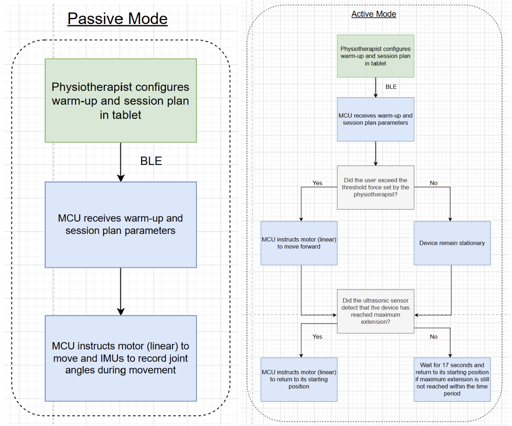
Figure 53.
Result:
The device demonstrated controlled motion in both passive and active modes. In passive mode, the system achieved smooth and consistent movement across the required range of motion. In active mode, the device responded appropriately to user-applied force, adjusting motor behaviour based on input, thereby validating the functionality of the active control system.
4.3.5 Test Shortcomings and Proposals
After conducting all of the electrical tests, we have identified issues that arose from the initial electronic architecture, which are summarised below (Table 26).
| Area | Issue Identified | Reason / Implication | Required Follow-Up Action |
|---|---|---|---|
| ET1: Voltage Output Verification Test | Addition of LDO in electrical architecture is unnecessary. | 3.3 V output pin of Raspberry Pi Pico 2W performed equally to that of LDO. | 3.3 V output pin of Raspberry Pi Pico 2W will supply the power for the load cells and IMUs. |
| Force Sensing Electrical Schematic Revision | Force sensing was switched from force sensitive resistors (FSR) to load cells | Load cells were more accurate and consistent with force sampling compared to force sensitive resistors | Redesign electrical schematic to suit load cells |
| Cable Management and Safety | Cables were disorganised and had exposed ends. | Disorganised wires and exposed ends could lead to electrical fires and electrocution respectively. | Organise the cables according to its components and insulate them. |
Table 26.
4.3.5.1 ET1: Voltage Output Verification Test Iteration
From the initial electrical architecture, an LDO was required to step down the 5 V from the buck converter to 3.3 V to supply power to the IMUs and load cells (Figure 54).
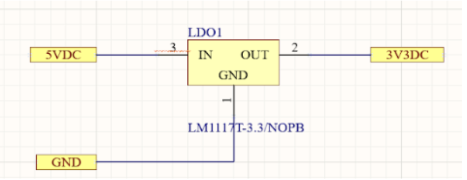
Figure 54.
However, from the ET1 test, the mean voltage output of the LDO and 3.3 V output pin of the Raspberry Pi Pico 2W were of the same value at 3.29 V. Thus, we decided to utilise the 3.3 V output pin of the Raspberry Pi Pico 2W instead to reduce the overall components for the device and simplify the overall electrical architecture.
4.3.5.2 Force Sensing Electrical Schematic Revision Iteration
Another modification was the use of load cells for our force sensing instead of the force sensitive resistors that were initially proposed (Figure 55).
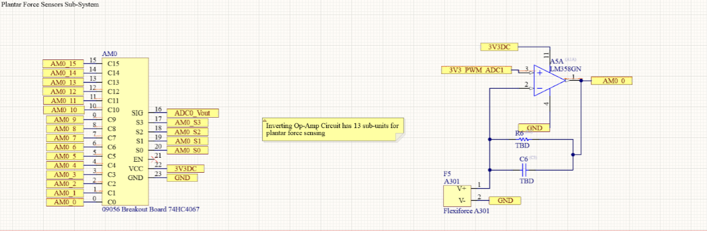
Figure 55.
As shown above, FSRs complicated the electrical architecture due to its non-linear behaviour and its small area, requiring an op-amp to linearise the voltage output for easier conversion using the analog-to-digital pins of the microcontroller. Lastly, an analog multiplexer was also required to sample a large number of FSRs due to its small surface area, increasing wiring complexity. As such, replacing them with load cells simplified the electrical architecture as it only needed an HX711 amplifier which linearises the analog output, and has a larger surface area compared to FSR, reducing the overall components used (Figure 56).
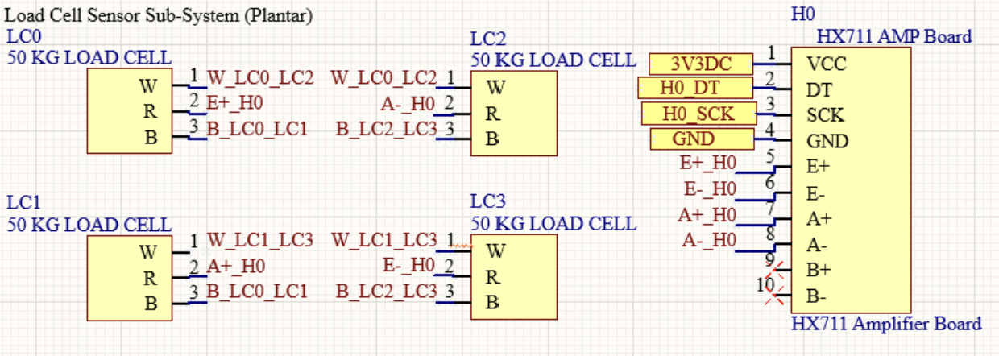
Figure 56.
4.3.5.3 Cable Management and Safety Iteration
With all of the sub-systems ready for integration, we eventually ran into the problem of cable management and safety due to the large number of peripherals required in our device (Figure 57).
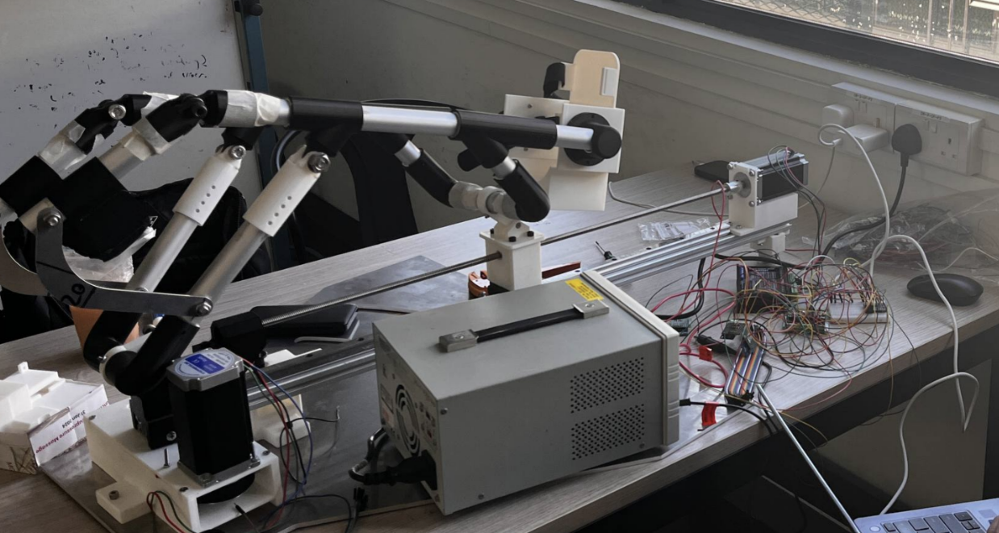
Figure 57.
This image illustrates this issue as although only the IMUs and motor were present, it was difficult to ascertain which wires belonged to their respective components. Exposed wires were also a safety hazard as it posed a risk of electrocution. It was therefore necessary that we could organise and insulate the wires for easier identification of components to prevent electrical accidents (Figure 57 and 58).
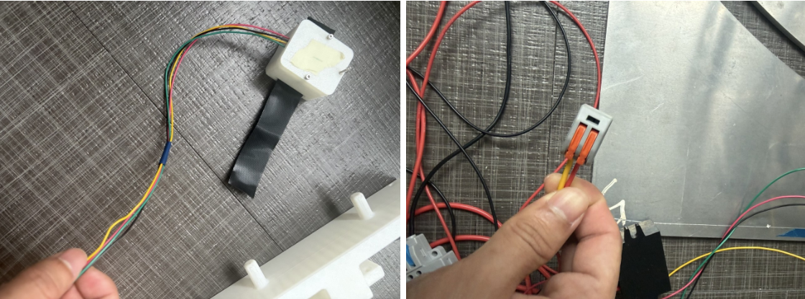
Figure 58.
To resolve this issue, we taped the wires for our peripherals and invested in WAGO connectors to make the identification and insulation of wires easier. Hence, improving the safety of our device.
4.4 Data Processing and Analysis Sub-System
The data processing and analysis sub-system consist of the Core X in the Pico, and the Bluetooth in the UI (Table 27).
| Test Code | Name of Test | Design Specification Addressed | Purpose of Test |
|---|---|---|---|
| BT1 | Latency Test | B1 | Verify the transfer of data from pico to UI is under 100 ms |
| Data Sampling Rate | B2 | Verify that no packets are dropped at a sampling rate of 5 Hz |
4.4.1 BT1 Combined Bluetooth Latency and Data Sampling Rate Test
The data analysis system consists of a Bluetooth-enabled pipeline between the Pico microcontroller and the Kinetix UI, where sensor data (IMU angles and force readings) are sampled on the device and transmitted in real time. The Pico aggregates and formats this data into structured packets (e.g., TICK and DATA messages), which are sent at a controlled rate of 5 Hz. On the UI side, incoming data is parsed, visualised, and stored, enabling real-time monitoring, latency evaluation, and post-session analysis such as graph generation and CSV export. A diagnostic module was used to evaluate communication performance by measuring end-to-end latency and packet reliability through controlled test sequences (Figure 59).
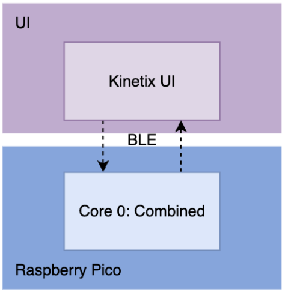
Figure 59.
Although the operational update rate is 1 Hz, the system was validated at 5 Hz to ensure robustness under higher data transmission demands. The table (Table 28) below describes the combined test procedure used to verify that Bluetooth communication between the Pico microcontroller and the Kinetix UI satisfies both the end-to-end latency requirement and the 5 Hz data sampling reliability requirement.
| Step | Procedure |
|---|---|
| 1 | Power on the microcontroller and ensure the Bluetooth module is properly connected and initialised. |
| 2 | Open the Kinetix UI application on the external tablet and establish a Bluetooth connection. |
| 3 | Initiate a known input event on the microcontroller (e.g., generate a sensor reading or trigger a signal). |
| 4 | Record the timestamp at which the data is transmitted from the microcontroller. |
| 5 | Observe the corresponding update on the Diagnostics page of the UI and record the timestamp when the data is displayed. |
| 6 | Calculate the latency as the time difference between transmission and display. |
| 7 | Repeat the test multiple times (at least three trials) to ensure consistency. |
| 8 | Compute the average latency and compare it against the design requirement of <100 ms end-to-end. |
Table 28.
Result:
In the initial implementation, Kinetix adopted a single-core architecture where Bluetooth communication, motor control, and sensor processing were executed within the same processing loop. This resulted in blocking behaviour, particularly during motor actuation where delays (e.g., sleep_us) prevented the BLE stack from being serviced in a timely manner. Consequently, the system experienced high latency (up to 564 ms) and frequent Bluetooth disconnections, as the communication subsystem failed to meet required servicing intervals (Figure 60).
Figure 60.
Design iteration:
To address this limitation, the system architecture was redesigned into a dual-core distributed architecture (Figure 61). In the improved design:
- Core 0 is dedicated to handling BLE communication and command processing, ensuring continuous and non-blocking servicing of the Bluetooth stack.
- Core 1 is responsible for motor control, sensor acquisition (IMU and force sensors), and data processing, where blocking operations can be safely executed without affecting communication performance.
- A shared memory interface was introduced to enable communication between the two cores.
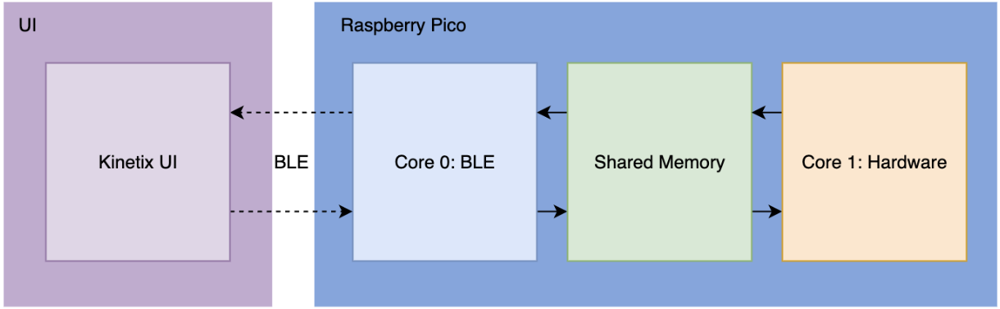
Figure 61.
Commands received via BLE are written to shared variables (e.g., motor requests), while processed sensor data is updated by Core 1 and read by Core 0 for transmission to the UI. Following these changes, the test was repeated using a diagnostics module that tested the throughput of 25 packets over 5 trials at 5 Hz (Figure 62 and Table 29).

Figure 62.
| Trial | Latency (ms) | Packets Received | Packet Loss (%) |
|---|---|---|---|
| 1 | 33.6 | 25/25 | 0.0 |
| 2 | 37.8 | 25/25 | 0.0 |
| 3 | 26.2 | 25/25 | 0.0 |
| 4 | 26.9 | 25/25 | 0.0 |
| 5 | 31.1 | 25/25 | 0.0 |
| Average | 31.1 | 25/25 | 0.0 |
Table 29.
Result:
Following this iteration, the system demonstrated a significant improvement in performance. The measured end-to-end latency ranged between 26.2 ms and 37.8 ms, with an average latency of 31.1 ms, which is well within the required threshold of <100 ms. All packets were successfully received with 0% packet loss. This confirms that the redesigned architecture successfully resolves the limitations of the initial implementation and provides a stable foundation for real-time rehabilitation applications.
4.5 User Interface Sub-System
4.5.1 Design Iteration
Testing for the User Interface Sub-System was conducted through user tests in Section 6.4.
Iteration 2 focused on simplifying the interface, improving therapist workflow, and enhancing client engagement through gamification and real-time feedback. Key changes included replacing the session calendar with a goals/progress dashboard and restructuring the system into a clear 5-stage user flow with improved therapist–client interaction.
These updates improved usability, clarity, and motivation, with detailed changes documented in the Interim Report.
While the Therapist-Led UI resolved many workflow and engagement issues, user testing and physiotherapist interviews revealed several clinical and technical gaps that a purely structural interface could not address. In addition to integrating BLE directly into the UI, the third and final iteration, referred to as the Clinically Integrated UI, directly addressed each of these issues, as summarized in the table below (Table 30).
| Issue Identified in Iteration 2: Therapist-Led UI | Feature Added to Iteration 3: Clinically Integrated UI |
|---|---|
| Fixed starting position cannot accommodate inter-patient variability in range of motion | Manual positional control via BLE for physiotherapists to adjust each patient's leg starting position |
| Bluetooth latency and packet loss undermine clinical trust and reliability | Diagnostics page monitors latency and packet loss in real time, as well as support performance reports in scaled application |
| Physiotherapists cannot select appropriate resistance level without objective strength data | Live IMU joint angle and force sensor readings to observe force output before prescribing resistance |
| Post-stroke patients may struggle to follow visual cues alone | Auditory cues guiding each repetition on both warm-up and session screens |
| Patients confused by extra warm-up reps indistinguishable from main session | Dedicated warm-up screen to delineate preparatory phase from active treatment |
| Patients confused by how to perform exercises | Videos added to the session page to provide a reference for patients to follow |
Table 30.
Full videos can be found in the Appendix J. As a result of the features introduced in the Clinically Integrated UI, the user flow diverges from that of the Therapist-Led UI. All changes relative to Iteration 2 are illustrated in orange in the user flow diagrams below (Figure 63).

Figure 63.
4.5.2 Test Shortcomings and Proposals
User testing was conducted through role-playing with volunteers, which provided initial insights into usability and interaction flow. However, as the Kinetix UI is designed for clinical rehabilitation contexts, validation by professional physiotherapists or rehabilitation specialists is necessary to assess its effectiveness and suitability for real-world therapeutic use.